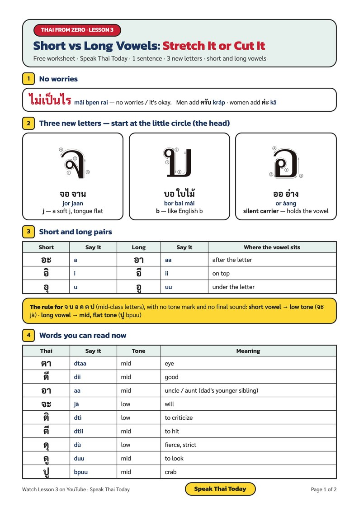

จ
jor jaan
Sounds like a soft j. Keep your tongue flat.
ติ / ตี · ดุ / ดู — stretch it or cut it. Learn 3 new letters, read a whole sign, and grab the free printable worksheet.
ไม่เป็นไร (mâi bpen rai) = no worries / it's okay. Men add ครับ (kráp), women add ค่ะ (kâ).
Sounds like a soft j. Keep your tongue flat.
Just like English b.
Silent on its own: it carries the vowel.
| Short | Long | Where the vowel sits |
|---|---|---|
| อะ a | อา aa | after the letter |
| อิ i | อี ii | on top |
| อุ u | อู uu | under the letter |
| Thai | Say it | Tone | Meaning |
|---|---|---|---|
| ตา | dtaa | mid | eye |
| ดี | dii | mid | good |
| อา | aa | mid | uncle / aunt (dad's younger sibling) |
| จะ | jà | low | will |
| ติ | dtì | low | to criticize |
| ตี | dtii | mid | to hit |
| ดุ | dù | low | fierce, strict |
| ดู | duu | mid | to look |
| ปู | bpuu | mid | crab |

Say your answer out loud, then tap to check.
ติ (dtì) — to criticize. Short and low.
To look. Long vowel, mid tone.
ไม่เป็นไร (mâi bpen rai) — no worries.
💬 Comment challenge: write “The crab is fierce!” in Thai under the YouTube video!
Real Thai for travelers & expats, with a native Thai teacher — every lesson comes with a free worksheet.
5 quick questions. Tap an answer.